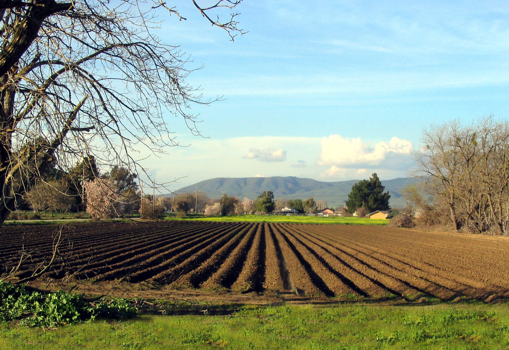

Producția
Agricultura reprezintă 6% din PIB-ul țării (anul 2007), față de 12,6% în 2004. Circa trei milioane de români lucrează în agricultură, aproximativ 30% din totalul persoanelor ocupate (august 2009), comparativ cu doar 4-5 procente în țările occidentale.  Agricultura României este departe de ceea ce se practică în Europa atât ca producție, cât și ca tehnologie. Produsele „made in România” sunt prezente în cantități mici pe piața externă, în timp ce importurile cresc de la an la an, fostul grânar al Europei în perioada interbelică devenind un importator net, pe anumite segemente - exemplele cele mai concludente sunt carnea, fructele și legumele.
Din punct de vedere al mecanizării, în septembrie 2009 situația se prezintă astfel: România dispune de o dotare cu tractoare și utilaje agricole printre cele mai slabe din Europa, încărcătura pe fiecare tractor fiind de aproximativ 54 de hectare, comparativ cu UE, unde media este de numai 13 hectare. Parcul intern de tractoare se ridică la circa 170.000 de unități, din care circa 80% sunt îmbătrânite. Spre deosebire de Occident, unde tractoarele sunt considerate vechi la 3.000-4.000 de ore, în România încărcătura pe tractor ajunge chiar și la peste 12.000 de ore de utilizare.
Problemele majore ale agriculturii din România sunt: lipsa unor investiții majore în agricultură (nu atât din cauza lipsei fondurilor de finanțare, ci mai degrabă din dificutatea accesării acestora), fărâmițarea pământurilor, litigiile legate de proprietate și tehnologia precară. Produsele românești nu corespund întotdeauna standardelor de calitate ale UE, ceea ce și explică lipsa prezenței pe piețele externe, în timp ce mărfurile din import au invadat rafturile magazinelor autohtone.
Dintre companiile străine, au pătruns pe piața românească giganți precum Smithfield Foods, cu investiții de câteva sute de milioane de euro, Cargill, Bunge, Glencore, Lactalis și Meggle.
La mijlocul anilor '80, România ajunsese la o producție de 8,5 milioane de tone de grâu (1988) și 11,9 milioane de tone de porumb (1985), însă după căderea comunismului, infractutura agricolă se află în paragină, sistemele de irigații au fost furate sau distruse, parcul de mașini agricole în mare parte casat, suprafața agricolă fiind extrem de fărâmițată.
Producția de cereale s-a ridicat, în 2006, la 15,1 milioane de tone, din care cea de grâu a fost de 5,3 milioane tone, iar cea de porumb - de 8,6 milioane tone. Nivelul producției de cereale a României înregistrat în anul 2007 s-a situat la 7,8 milioane de tone.